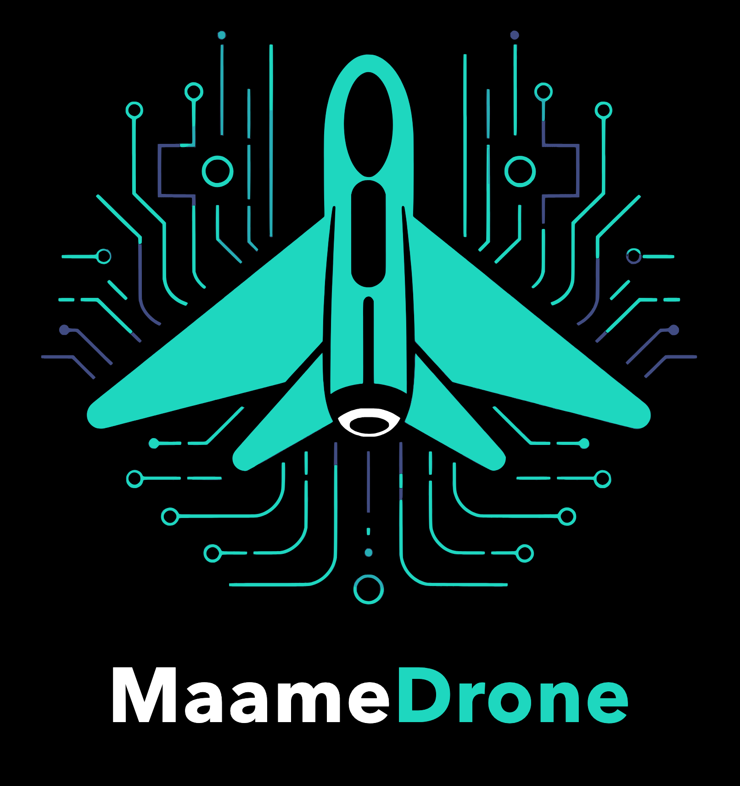
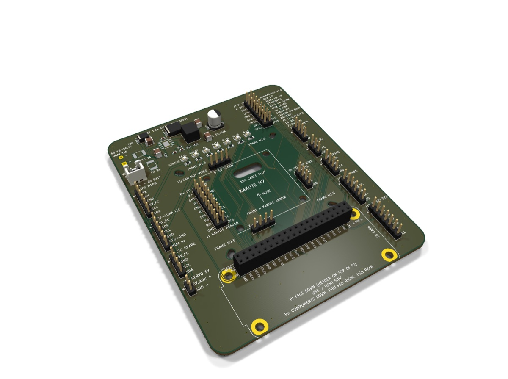
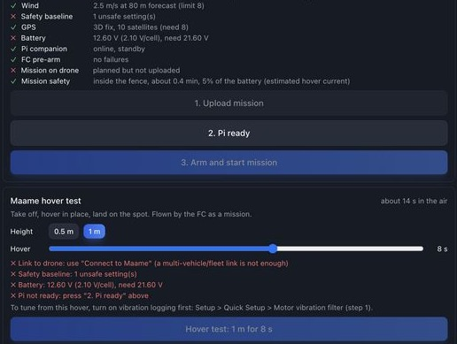
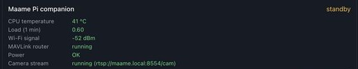
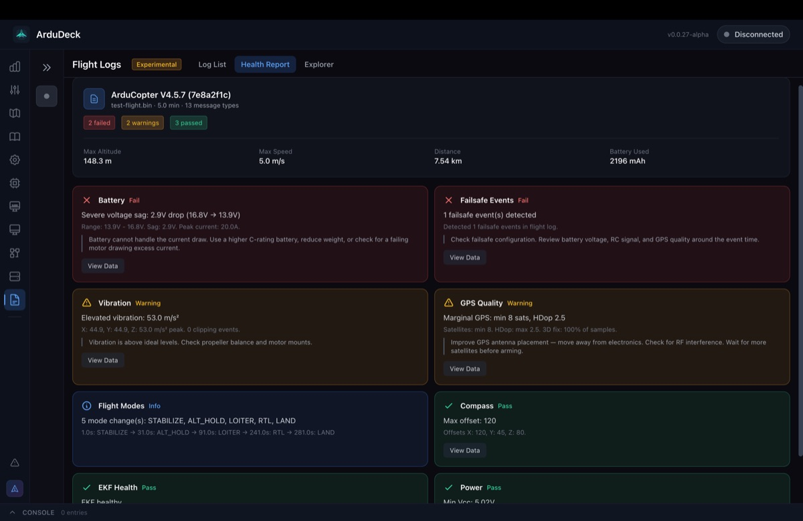
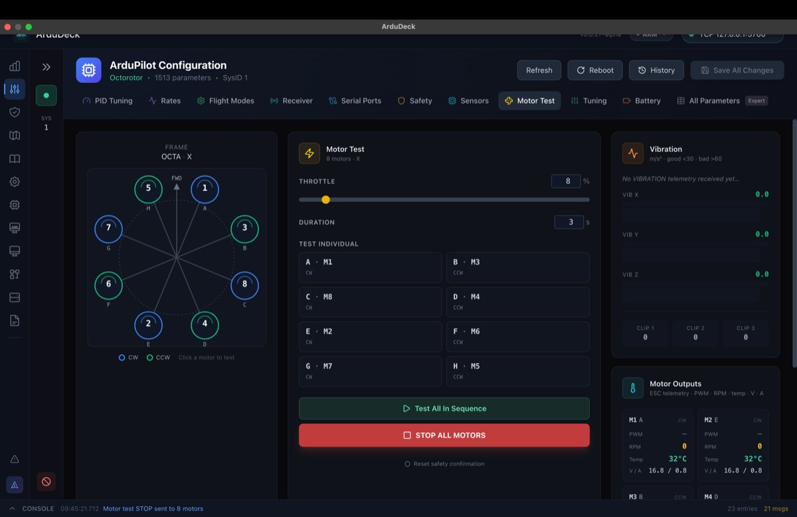
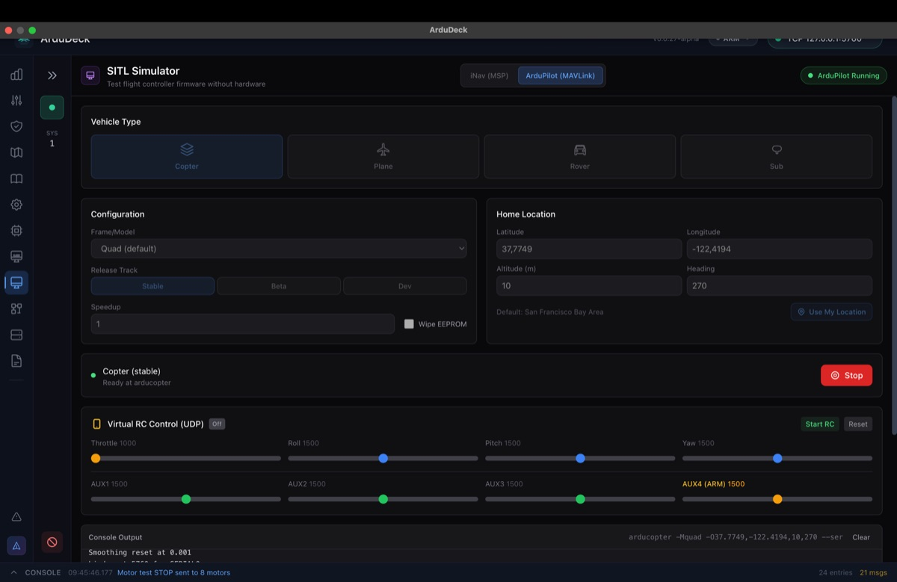

Ground station · autonomous, no RC
MaameDrone-ArduDeck
The ground station for Maame, an ArduPilot quadcopter that flies its missions on its own, with no radio-control transmitter. Plan, check, launch and watch every flight from one app.
- ArduPilot 4.7
- Kakute H7
- Pi Zero W companion
- Wi-Fi · SiK · 4G

Where it stands November 2026
Every Maame feature is proven in ArduPilot's simulator first, then on the real drone.
Verified on the real drone
- Wi-Fi link through the Pi companion
- MAVLink signing enforced on the flight controller
- Pi ready / standby from the app
- Arming gate script installed and running
- Land from the phone dashboard
Proven in the simulator
- Autonomous launch and emergency stop
- Hover tests at 0.5 m and 1 m
- Maame Cockpit manual flying
- Signed links and the phone dashboard
- All 6 simulator tests passing
How it flies
The flight controller flies the mission. A Raspberry Pi on board watches over it and must report ready before the motors can arm. The laptop listens on every link but only ever talks on one.
One talker, many listeners
Telemetry arrives on every link; commands and mission uploads go out on the active link only, with automatic failover.
Signed links
MAVLink signing on the flight controller: unsigned commands are ignored.
A backup that doesn't need the Pi
The SiK radio is wired straight to the flight controller, so a Pi crash never cuts the last link.
The board it flies on
MaameDrone V1.0 is our own carrier board: one 95 × 116.5 mm, two-layer PCB that holds the Kakute H7 and the Pi Zero W, powers both from the 6S battery and breaks out every port the aircraft uses. The design files are open.
Flight controller and companion, one board
The Kakute H7 sits on M2.5 grommets and connects through a short harness to headers that copy its pads 1:1. The Pi Zero W plugs face down onto a 2×20 socket and talks to the flight controller over the serial link this app listens on.

Power from the battery
A TPS54360B buck makes 5 V at 3.5 A, behind a 2 A fuse and a TVS diode, plus a fused battery output.
Every port broken out
GPS M10Q, SiK radio, iBUS receiver, TF-Luna lidar, a servo, spare I2C and SPI, all named on the silkscreen.
Status at a glance
LEDs for both 5 V rails, the Pi, data and three battery levels; the low one flashes at the battery failsafe.
What it adds to ArduDeck
A thin Maame layer on top of ArduDeck: new screens and checks in their own files, so upstream updates still merge cleanly.
Checks first, then one-flow launch
One list covers the link, SiK signal margin, Pi health, GPS and EKF, battery, safety settings, fence and the wind forecast at 80 m. Every red item says exactly what to fix. Then: upload the mission, get the Pi's ready, arm and start, each step confirmed before the next.

A companion you can see
The Pi reports its temperature, load, Wi-Fi signal, router, power and camera stream every two seconds. From the same panel you check MAVLink signing and install or update the arming gate script on the flight controller, no SD card needed.

Emergency controls
Pause, return home, land here, and a hold-to-confirm motor kill, always on screen.
Hover test
A short take-off, hover and land that measures the real hover current and gives a vibration verdict.
Motor vibration test
Spins each motor alone, props off, and points out the one shaking the frame. No GPS lock needed.
Maame Cockpit
Manual flying without a transmitter: nudges, turns, on-screen sticks and keyboard keys. The drone holds position the moment you let go.
Coordinate missions
Paste or import a list of coordinates, checked against the fence, with a flight-time and battery estimate.
Phone dashboard
A small web page served by the Pi for monitoring and the essential Pause, Return and Land buttons.
Flight logs
Every connection is recorded to its own telemetry log, one click away.
Safety without a transmitter
With no RC to take over, the safety net has to be built in.
- Pi arming gate. The motors can't arm until the companion has run its own checks and reports ready.
- Failsafes always on. Geofence, ground-station loss and battery failsafes return the drone home or land it.
- Settings baseline. The app compares the flight controller's settings with a known-safe set and blocks launch if one is off.
- Commands on one link only. No duplicated commands when several links are up.
- Tested in simulation. Launch, hover, signing, dashboard and cockpit are flown in ArduPilot's simulator before real flights.
Also inside, from ArduDeck
Everything ArduDeck already does comes along: setup, tuning, logs, simulation.



Screenshots from ArduDeck, which MaameDrone-ArduDeck is built on.
Get it
There are no installers yet. Run the ground station from source, and put the drone software on the Pi.
Ground station
Needs Node.js 20 or newer and pnpm.
git clone -b maame https://github.com/asare-21/maame-drone-ardudeck
cd maame-drone-ardudeck
pnpm install
pnpm startDrone software
The Pi companion services, the arming gate Lua script, the phone dashboard, the carrier board design and the simulator test suite live in their own repository.
maame-air on GitHubQuestions
Is this ArduDeck?
Yes, with a Maame layer on top. MaameDrone-ArduDeck is a fork of ArduDeck that adds screens and checks for the Maame drone. Everything else in ArduDeck still works.
Why fly without an RC transmitter?
Maame is built to fly missions on its own, often beyond where a hand-held radio would reach. Instead of a pilot on sticks, safety comes from the Pi arming gate, failsafes, signed links and emergency controls in the app.
What hardware does it need?
The Maame setup: an ArduCopter 4.7 flight controller (a Kakute H7 here), a Raspberry Pi Zero W companion on the Maame carrier board, and a link to the laptop over Wi-Fi, a SiK telemetry radio, or 4G.
Can I use it with another drone?
Yes for the ArduDeck features, since it is still a full ground station. The Maame screens assume the Pi companion and its arming gate, so on other drones they show those parts as missing.
How is it kept safe?
The motors can't arm until the Pi reports ready, the fence and battery and ground-station failsafes are always on, links are signed, and commands go out on one link at a time. New features are flown in ArduPilot's simulator before the real drone.
Does it work offline?
Yes. On the Pi's own Wi-Fi with no internet, everything works. The wind check simply reports that no forecast is available instead of blocking the launch.
What is the licence?
GNU GPL v3, the same as ArduDeck.